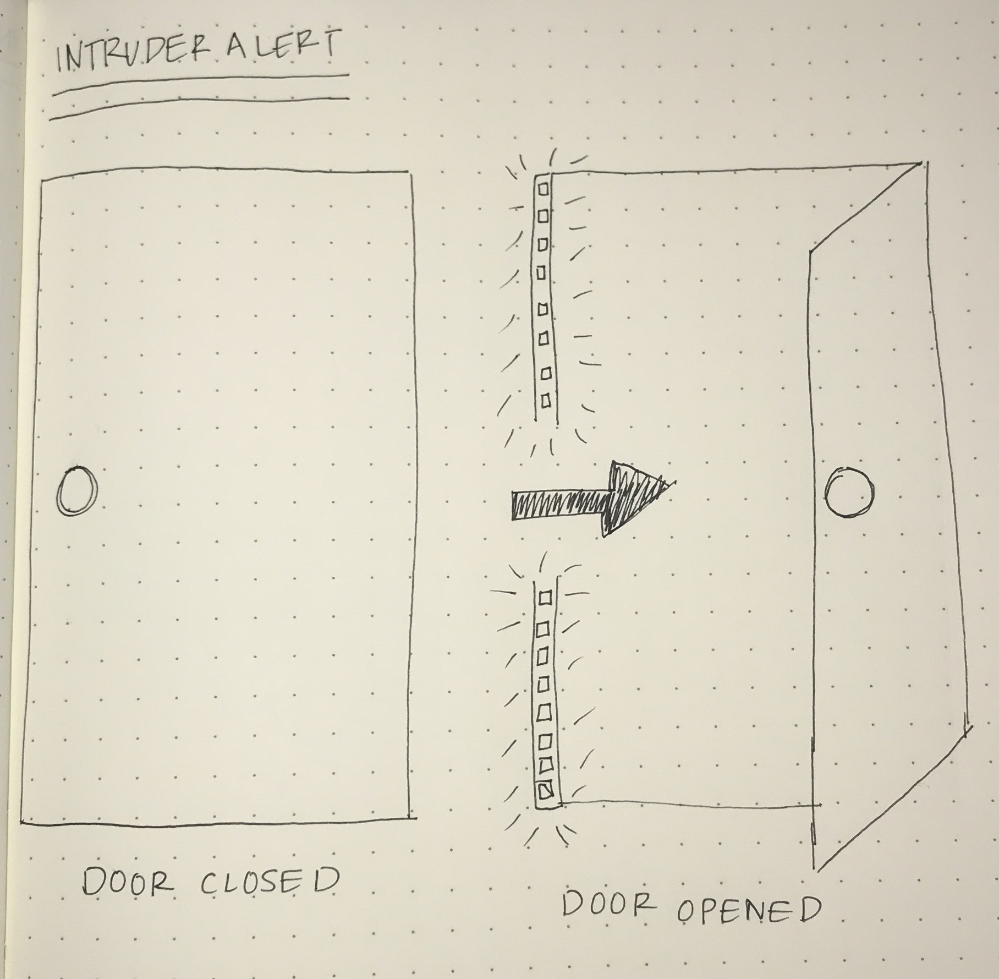
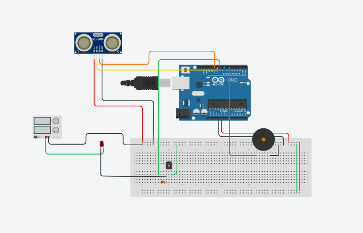
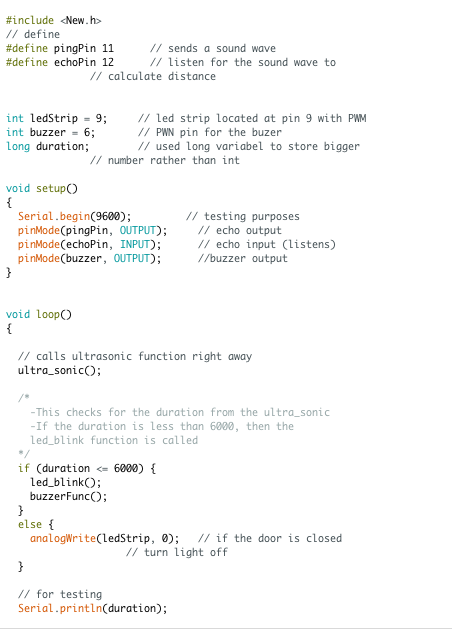
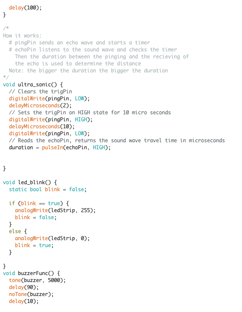

I wanted to create an alarm system that allows families to know their child is entering a room they're not supposed to i.e., the buzzer, while also implementing a signifier to the
child i.e., the LED strip.
Through the setup, I taped the LED strip to the door frame, and placed the ultrasonic sensor towards the lower half of the door frame.
This allowed the user to not have the sensor in their direct view, while also allowing the sensor to serve it's purpose.

My code was fairly straightforward, but I ran into a few problems with the ultrasonic sensor in my code. Determing the distance between the door and sensor, and implementing
a 2 microsecond delay were the 2 things I struggled with most. I initally did not implement a delay at all which resulted in inconsistent results.
 